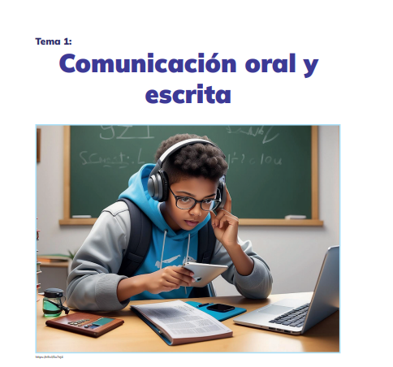

Objetivos
- Desempeñarse como usuarios competentes de la cultura escrita en diversos contextos personales sociales y culturales para actuar con autonomía y ejercer una ciudadanía plena.
- Valorar la diversidad lingüística a partir del conocimiento de su aporte a la construcción de una sociedad intercultural y plurinacional, en un marco de interacción respetuosa y de fortalecimiento de la identidad.
Introducción a la Expresión Oral y Escrita
🗣️ Comunicación oral
Es el tipo de comunicación en la que el emisor transmite un mensaje de forma hablada. Puede realizarse de forma presencial o mediante tecnologías como la radio, videollamadas o podcasts.
✍️ Comunicación escrita
Este tipo de comunicación usa signos gráficos (letras, símbolos, puntuación) para transmitir el mensaje. Se da a través de medios impresos o digitales como libros, correos electrónicos, mensajes de texto, etc.
🧾Características principales
Comunicación oral:
- Es inmediata, efímera y directa.
- Usa lenguaje coloquial y expresivo.
- Se apoya en el tono de voz, gestos y emociones.
- Permite retroalimentación al instante.
Comunicación escrita
- Es duradera, planificada y estructurada.
- Usa lenguaje más formal.
- Permite revisar y corregir antes de enviar.
- No tiene respuesta inmediata.
⚖️ Comparación
| Aspecto | Comunicación Oral | Comunicación Escrita |
| Canal | Auditivo / Visual | Visual (texto) |
| Temporalidad | Instantánea / Efímera | Permanente / Revisable |
| Interacción | Directa y simultánea | Indirecta y diferida |
| Lenguaje | Coloquial / Espontáneo | Formal / Estructurado |
| Recursos | Tono, pausas, gestos | Ortografía, puntuación, conectores |